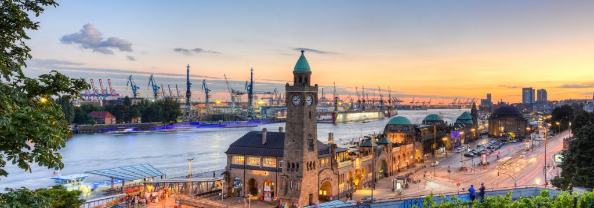
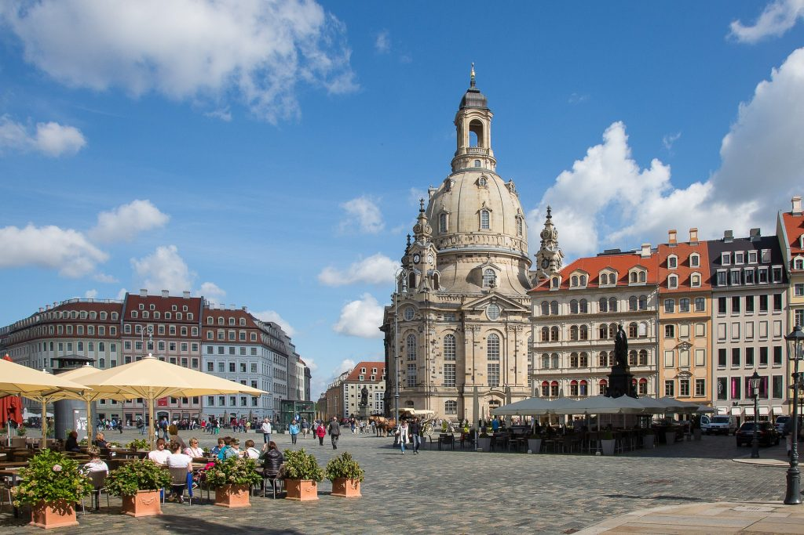
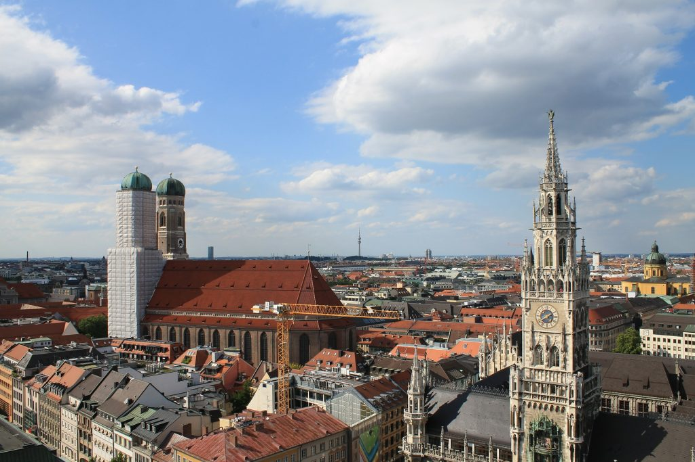
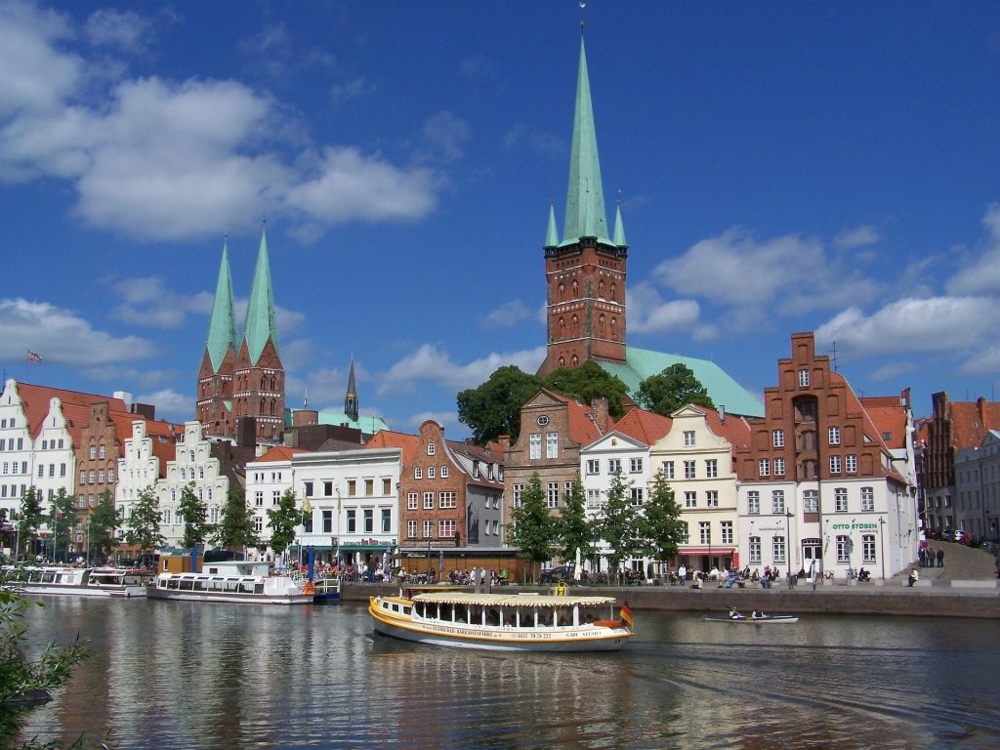
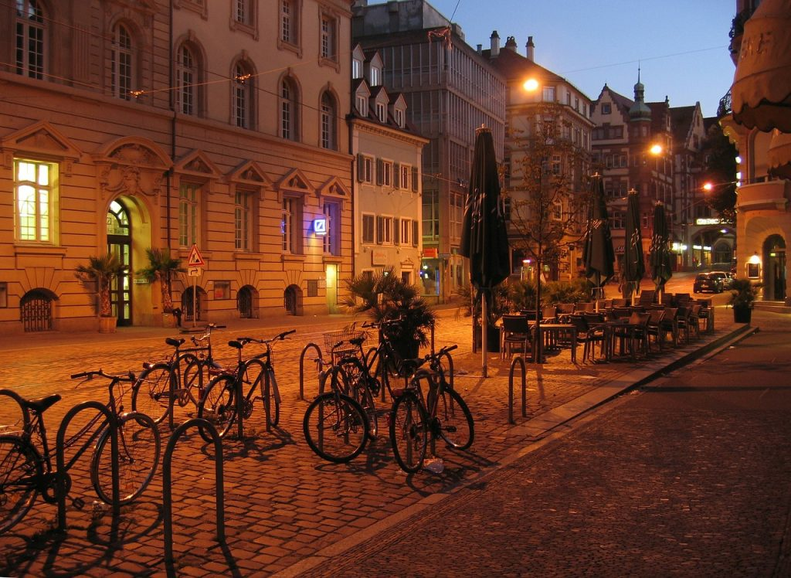
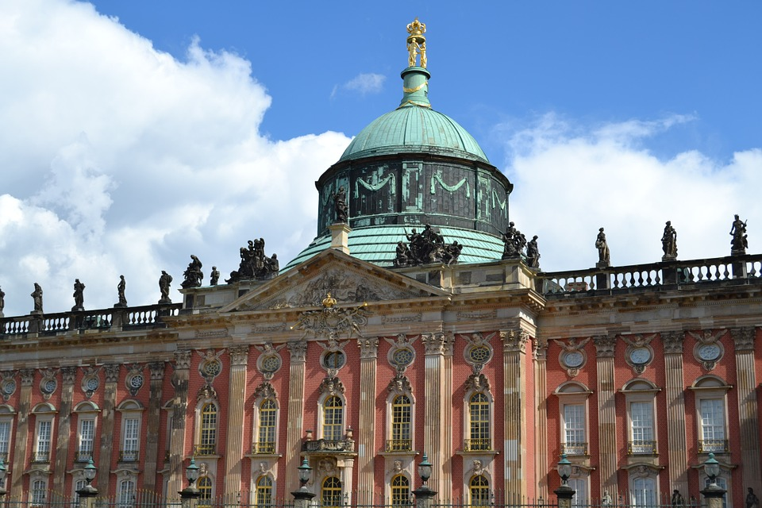
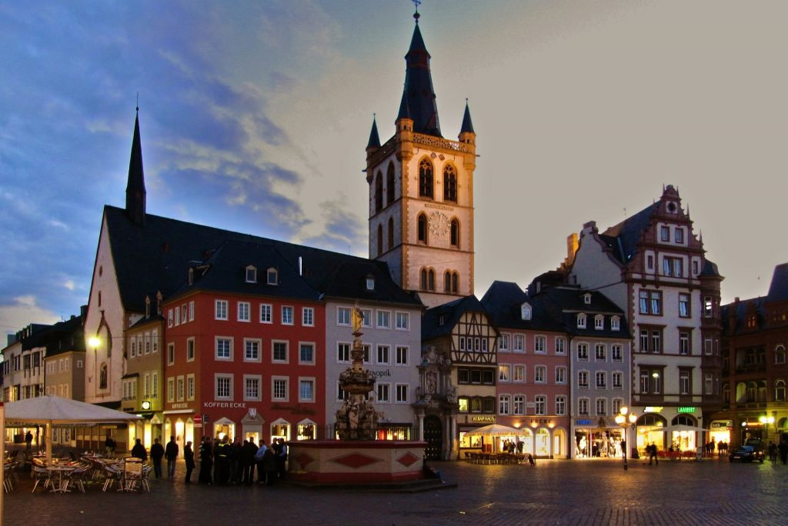
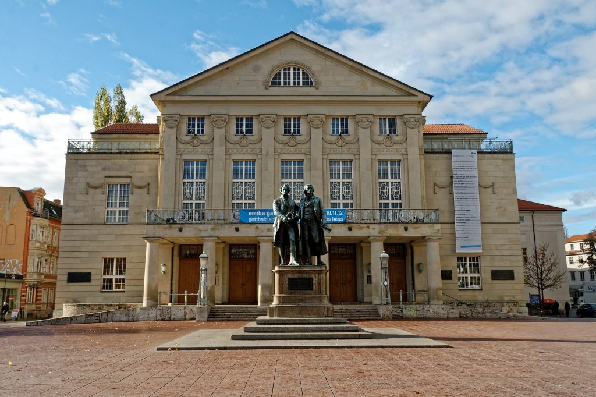
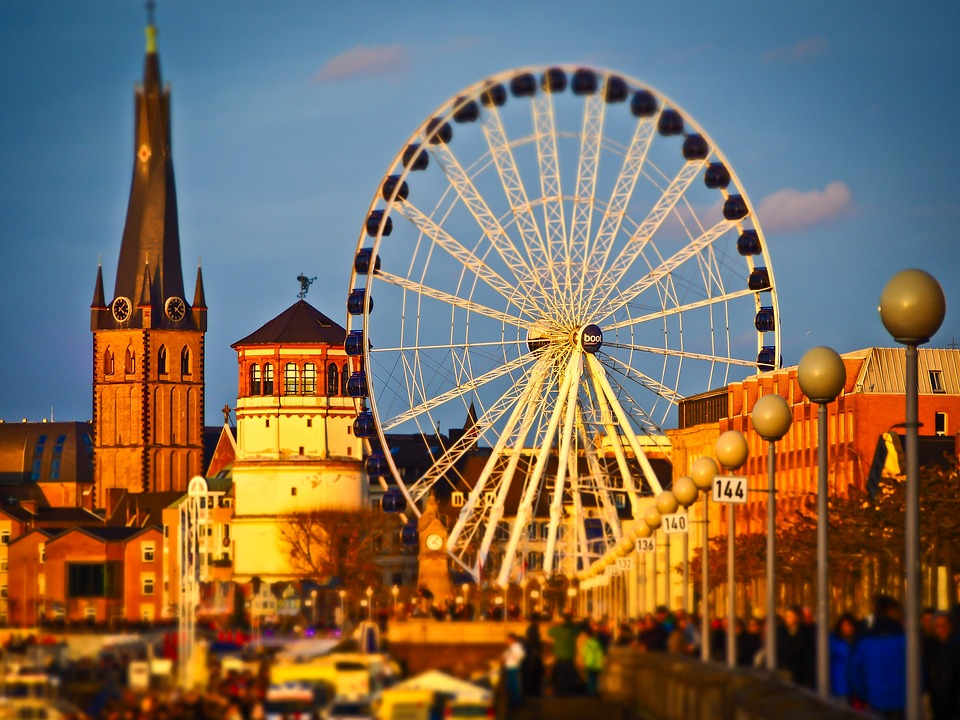

Die Top 10 der schönsten Städte Deutschlands
Algemein Information

2.046 Städte gibt es in Deutschland. Viele davon beeindrucken mit ihren Bauwerken, Wahrzeichen und Landschaften. Doch welche Stadt ist die Schönste? Bei der großen Auswahl an idyllischen Kleinstädten und schillernden Metropolen keine leichte Frage. Lübeck hat eine der schönsten Innenstädte, München den besten Ruf und Freiburg die meisten Sonnenstunden. Wir stellen Ihnen unsere Liste der zehn schönsten Städte Deutschlands vor. Darunter die beliebten Großstädte Berlin und Hamburg, aber auch kleinere Juwele, die eine Städtereise wert sind.
Platz 1:HAmburg
Der beliebte hanseatische Charme
Hamburg ist regelmäßiger Spitzenreiter bei Beliebtheitsumfragen. Geht man nach Sympathie und Anziehungskraft ist die Millionenmetropole an der Alster die attraktivste Stadt in der Bundesrepublik. Kulturstadt Neben hanseatischem Charme und zahlreichen Sehenswürdigkeiten bietet Hamburg auch ein vielseitiges Kulturprogramm. Über 60 Theater und ebenso viele Museen locken jedes Jahr Touristen aus aller Welt in die Hansestadt. Hamburg ist außerdem ein berühmter Musicalstandort: Aktuell werden hier unter anderem „Der König der Löwen“ und „Aladdin“ aufgeführt. Ein Muss für jeden Hamburg-Urlauber ist der Besuch des traditionsreichen Fischmarkts. In der Stadt warten weitere Highlights wie die Speicherstadt, die erst kürzlich zum UNESCO-Weltkulturerbe ernannt wurde und die neue HafenCity.
#Hamburg Kurzurlaub die Pltze die dir gefallen werden !
Musicalstandort{kind=link}
Platz 2:Dresden
Florenz an der Elbe
Dresden gilt als „Florenz an der Elbe“. Als deutsches Gegenstück der toskanischen Metropole darf Dresden auf der Liste der schönsten deutschen Städte fehlen. Diesem Ruf wird die sächsische Stadt vor allem in den warmen Sommermonaten gerecht, wenn es die Dresdner an die Elbwiesen und in die historische Altstadt zieht. Letztere ist mit ihren barocken Bauwerken von Frauenkirche bis Semperoper auch ein Anziehungspunkt für Städtereisende aus aller Welt. Stadt im Trend Immer mehr junge Leute kommen zum studieren und leben in die sächsische Landeshauptstadt. Wiesen, Parks und Grünflächen sorgen für Abwechslung im Stadtbild und die Nähe zur Elbe gibt der Stadt einen besonderen Flair. Laut aktueller Umfragen ist Dresden zwar nicht die beliebteste unter den deutschen Städten, dafür aber die Schönste. Erleben Sie selber die einzigartige Altstadt bei einem Kurzurlaub in Dresden.
#Dresden Kurzurlaub die Pltze die dir gefallen werden !
#Kurzurlaub in DresdenPlatz 3:München
Marin Platz
Obwohl Dresden der bayerischen Landeshauptstadt in den letzten sass/header.scss Jahren den Rang abläuft, gehört München immer noch zu den schönsten Städten Deutschlands. Sehnswürdigkeiten gepaart mit bayerischer Gemütlichkeit Die Münchner selbst sind ohnehin von der Schönheit ihrer Stadt überzeugt. Und zurecht: Die barocke Architektur, der weltberühmte Marienplatz und die bayerische Lebensart machen München zu einem beliebten Reiseziel und einer der lebenswertesten deutschen Städte. Im Englischen Garten und an den vielen kleinen Isar-Stränden verbingen die Münchner am liebsten ihren Sommer. Im Oktober lockt das Oktoberfest Millionen von Besuchern in die Stadt und für Sportfans ist die Allianz Arena, Spielstätte des FC Bayern Münchens ein beliebter Sighsteeing-Ort. Wer in der Stadt ist, sollte sich einen Besuch im Hofbräuhaus nicht entgehen lassen – urbayrische Küche inklusive. Travelcircus unterstützt Sie natürlich mit passenden Angeboten bei Ihrer München Städtereise.
#München Kurzurlaub die Pltze die dir gefallen werden !
München StädtereisePlatz 4: Lübeck
Die Stadt der sieben Türme
Auch die Hansestadt Lübeck findet sich in unserem Ranking der schönsten deutschen Städte wieder. Das bekannteste Wahrzeichen der „Stadt der sieben Türme“ ist das Holstentor, durch welches man die historische Altstadt erreicht. Als Geburtstort von Willy Brandt und Schauplatz von Thomas Manns berühmten „Buddenbrooks“ spielt auch Kultur eine wichtige Rolle in Lübeck. Im Buddenbrookhaus in der Mengstraße 4 lebten die Manns früher, heute können Besucher hier auf den Spuren der berühmten deutschen Literatenfamilien wandeln. Mekka für Marzipanfans Berühmt ist Lübeck auch für sein Marzipan. Bei Niederegger in der Innenstadt gibt es die Süßware in sämtlichen Geschmacksrichtungen und Formen. Nur wenige Kilometer entfernt liegt die Ostsee mit ihren zahlreichen Strandbädern und Ferienorten. Die Mischung aus Wasser, Grünflächen, Kulturellem und maritimen Flair machen Lübeck zu einer der sehenswertesten und schönsten Städte in der Bundesrepublik.
#Lübeck Kurzurlaub die Pltze die dir gefallen werden !
#Lübeck StädtereisePlatz 5: Freiburg
Die Stadt der sieben Türme
Auch die Hansestadt Lübeck findet sich in unserem Ranking der schönsten deutschen Städte wieder. Das bekannteste Wahrzeichen der „Stadt der sieben Türme“ ist das Holstentor, durch welches man die historische Altstadt erreicht. Als Geburtstort von Willy Brandt und Schauplatz von Thomas Manns berühmten „Buddenbrooks“ spielt auch Kultur eine wichtige Rolle in Lübeck. Im Buddenbrookhaus in der Mengstraße 4 lebten die Manns früher, heute können Besucher hier auf den Spuren der berühmten deutschen Literatenfamilien wandeln. Mekka für Marzipanfans Berühmt ist Lübeck auch für sein Marzipan. Bei Niederegger in der Innenstadt gibt es die Süßware in sämtlichen Geschmacksrichtungen und Formen. Nur wenige Kilometer entfernt liegt die Ostsee mit ihren zahlreichen Strandbädern und Ferienorten. Die Mischung aus Wasser, Grünflächen, Kulturellem und maritimen Flair machen Lübeck zu einer der sehenswertesten und schönsten Städte in der Bundesrepublik.
#Freiburg Kurzurlaub die Pltze die dir gefallen werden !
#Freiburg StädtereisePlatz 6: Berlin
Nur Berlin ist wie Berlin
Nur Berlin ist wie Berlin Zugegeben, für viele gehört Berlin nicht zwangsläufig auf die Liste der schönsten Städte Deutschlands. Und doch, wer einmal in der Hauptstadt zu Besuch war und das Berliner Lebensgefühl für sich entdecken konnte, wird die Stadt an der Spree lieben. Und vor allem ihre vielen schönen Seiten schätzen (und das sagen wir nicht nur, weil wir in Berlin leben). Die lebendige Weltmetropole Neben zahlreichen Parks wie dem Tiergarten oder dem Treptower Park gibt es in allen Vierteln und Berliner Kiezen einige schöne Orte. Das einzigartige Tempelhofer Feld, die vielen Strand-Bars an der Spree und Veranstaltungen machen Berlin vor allem im Sommer lebenswert. Von der belebten Stadtmitte ist man außerdem in wenigen Fahrminuten im Grunewald, im Botanischen Garten oder in Potsdam.Nicht umsonst gehören Berlin Städtereisen zu den beliebtesten Urlaubszielen für Reisende aus aller Welt.
#Freiburg Kurzurlaub die Pltze die dir gefallen werden !
Freiburg StädtereisePlatz 7: Potsdam
Stadt der Schlösser und Gärten
Damit sind wir auch schon bei einer anderen schönen deutschen Stadt. Potsdam liegt nur wenige Fahrminuten von Berlin entfernt und lockt mit seinen historischen Sehenswürdigkeiten nicht nur Hauptstadt-Bewohner an. Das wohl berühmteste Bauwerk der ehemaligen Residenzstadt ist das Schloss Sanssouci. Diesem und den fast 20 anderen Schlössern in der Potsdamer Kulturlandschaft verdankt Potsdam seinen Beinamen als „Stadt der Schlösser und Gärten“. Internationale Einflüsse Das barocke Neue Palais ist das größte Schloss Potsdams, das Orangerieschloss wohl eines der romantischsten. In der gesamten Stadt gibt es zudem zahlreiche Naturdenkmäler, Obelisken und Stadttore. Besonders an Potsdam sind auch die von unterschiedlichen Kulturen inspirierten und beeinflussten Viertel, wie dem Holländischen Viertel oder der Russischen Kolonie.
#Potsdam Kurzurlaub die Pltze die dir gefallen werden !
Potsdam StädtereisePlatz 8: Trier
Die Stadt mit viel Geschichte
Neben den genannten Klein- und Großstädten, gehört auch Trier unbedingt auf diese Liste. Im beschaulichen Rheinland-Pfalz liegt die älteste Stadt Deutschlands, die eine der malerischsten mittelalterlichen Altstädte beherbergt. Historische Bauwerke und Gebäude aus über zwei Jahrtausenden sucht man in anderen Städten vergeblich. In Trier gehören sie genau so zum Stadtbild wie die vielen römischen Baudenkmäler. Seit 1986 zählen unter anderem das Amphitheater, die Kaiserthermen und das Porta Nigra zum UNESCO-Weltkulturerbe. Beeindruckende Lage Durch die Lage inmitten des Moseltals hat Trier auch landschaftlich viel zu bieten. An den Hängen finden Besucher Weinberge und im Nordwesten beginnt beeits die Eifel.
#Trier Kurzurlaub die Pltze die dir gefallen werden !
Trier StädtereisePlatz 9: Weimar
Die Goethe-Stadt
Die Kulturstadt war Heimat von Goethe, Schiller und Herder. Das kulturelle Erbe der kleinen thüringischen Stadt ist überall spür- und sehbar. In Goethes Wohnhaus am Frauenplan und in seinem alten Gartenhaus wandelt man auf den Spuren des Dichters. Kunst- und Kultustadt im Osten Das 1919 gegründete Bauhaus ist noch heute Anziehungspunkt für Kunst- und Kulturliebhaber. Im dazugehörigen Bauhaus-Museum werden etwa 500 Exponate der Kunstschule ausgestellt. Schon im Jahr 1998 wurde das klassische Weimar von der UNESCO zum Weltkulturerbe ernannt. Auch das Rathaus und die vielen Denkmäler bestimmen das Weimarer Stadtbild. In der Universitätsstadt gibt es zudem viele Grünflächen, Parks und kleine Cafés. Entdecken Sie eine der beschaulichsten und schönsten Städte in Deutschland.
#Weimer Kurzurlaub die Pltze die dir gefallen werden !
Weimer StädtereisePlatz 10: Düsseldorf
Die Rheinstadt
Düsseldorf ist nicht nur die wohl schönste Stadt am Rhein, sondern auch eine der lebenswertesten Städte in Deutschland. Die Königsallee ist zwar einen Ausflug wert, für die Aufnahme in unsere Liste entscheidender, sind aber die Altstadt und vielen schönen Ecken der Stadt. Die Landeshauptstadt besitzt mehrere Rheinhäfen, Museen und Galerien. Die berühmte Rheinuferpromenade erstreckt sich über die Stadtteile Altstadt, Carlstadt und den Hafen. Für ihre Gestaltung erhielt die Stadt Düsseldorf im Jahr 1988 den Deutschen Städtebaupreis. In der fünften Jahreszeit ist Düsseldorf Schauplatz einiger der größten Karnevalsumzüge Deutschlands.
#Düsseldorf Kurzurlaub die Pltze die dir gefallen werden !
Düsseldorf StädtereiseDie Top 10 der schönsten Städte Deutschlands auf den Punkt gebracht
So viele schöne Städte hat Deutschland. In allen Ecken des Landes findet sich ein wundervoller Ort, der entweder mit seiner Architektur, seiner Geschichte, seinen Sehenswürdigkeiten, seinem Kulturleben, seiner Lage oder schlicht mit seinem Lebensgefühl beeindruckt. Was halten Sie von unserer Top 10 der schönsten Städte Deutschlands? Welches ist Ihre Lieblingsstadt?
FAQ: Häufige Fragen und Antworten zu den Top 10 Städten in Deutschland
Wie viele Menschen leben in den Top 10 Städten Deutschlands?
Sehen Sie hier die Top 10 Städte Deutschlands inklusive Einwohnerzahlen: Hamburg: 1,82 Mio. Dresden: 544.000 München: 1,46 Mio. Lübeck: 216.700 Freiburg: 229.200 Berlin: 3,75 Mio. Potsdam: 175.700 Trier: 114.900 Weimar: 65.500 Düsseldorf: 612.200 Wie groß sind die Top 10 Städte in Deutschland? Sehen Sie hier die Top 10 Städte Deutschlands inklusive der Fläche: Hamburg: 755,2 km² Dresden: 328,8 km² München: 310,4 km² Lübeck: 214,1 km² Freiburg: 153,1 km² Berlin: 891,8 km² Potsdam: 187,3 km² Trier: 117,1 km² Weimar: 84,48 km² Düsseldorf: 217,4 km² Was sind die Top 10 Städte in Deutschland? Die Top 10 Städte Deutschlands sind Hamburg, Dresden, München, Lübeck, Freiburg, Berlin, Potsdam, Trier, Weimar und Düsseldorf. Wo kann ich in den Top 10 Städten Deutschlands am besten shoppen? Am besten shoppen lässt es sich in Hamburgs Mönckebergstraße, auf Berlins Alexanderplatz oder in der Kaufingerstraße und Neuhauser Straße in München. Wie ist die Lebensqualität der Top 10 Städte in Deutschland? Die Lebensqualität der Top 10 deutschen Städte ist sehr gut. München liegt im internationalen Vergleich der lebenswertesten Städte auf Platz 3. Auf dem sechsten Rang folgt Düsseldorf und Berlin kann immerhin an Position 13 glänzen.
Diese Artikel könnten Sie auch interessieren:
| Piinterest | Telegram |